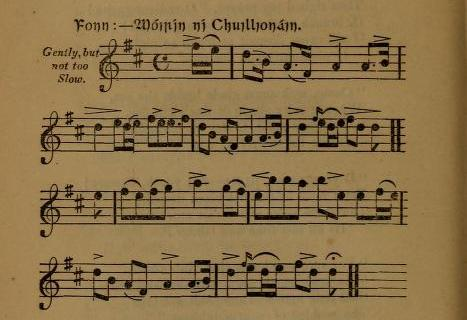
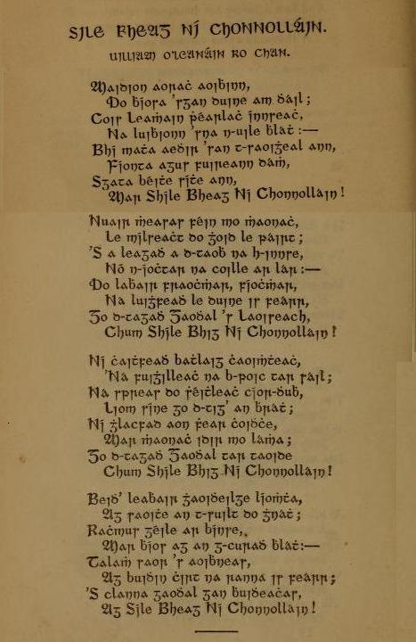

Sile bheag ni Chonnollàin
Little Celia O' Connellan [1]
La petite Cécile O'Connellan
by William O' Leanain [2]
A disguised Irish Jacobite Song [3]
Tune"Môirin ni Chuillionain"
Sequenced by Ch.Souchon

|
To the tune:
"Ascribed to the celebrated harper O' Connellan, A.D. 1650, who is said to have composed it for a favorite child whom he loved and idolized, on account of her great beauty and amiability. However, about the middle of the last century, coerced by the penal laws, the Munster bards composed several songs to this air; but invariably changed the name by which titles Ireland is allegorically symbolized." -J. O'D. Source: "The Poets and Poetry of Munster, A selection of Irish songs by the poets of the Last Century" With Metrical translations by Erionnach (alias Dr George Sigerson). Second Series Dublin John O'Daly, 9 Anglesea Street, 1860. |
A propos de la mélodie:
"Attribuée au célèbre harpiste O' Connellan (né en 1650), dont on dit qu'il la composa en l'honneur de son enfant préféré qu'il aimait et idolâtrait en raison de sa grande beauté at de sa grâce. Cependant, vers le milieu du 18ème siècle, contraints par les lois répressives, les bardes du Munster ont souvent composé des chants sur cet air; mais en changeant chaque fois le nom que porte l'allégorie de l'Irlande." -J. O'D. Source: "Les poètes et la poésie du Munster, choix de chants irlandais of Irish songs composés au siècle dernier" avec traduction chantable de Erionnach (alias Dr George Sigerson). Deuxième volume, Dublin chez John O'Daly, 9 Anglesea Street, 1860. |

|
LITTLE CELIA O'CONNELLAN Sung by William O' Leanàn 1. Alone, at red dawn early, I stood within the island bowers, "Where Leam'an's [3] stream flows pearly 'Mid wavy grass and brilliant flowers, Green earth gave fruits, unchary, And crimson wines they over-ran For me, from nymphs of Faery, Like Sile ni Connellan! ....... 11. I thought to win her graces, And love-smile on that rosy morn, In those green islet places Beneath the shady forest thorn. But she vowed with fiery fervour To never grant her love to man, Till rose her Strong to serve her, Bright Sile ni Connellan! 12. "No foreign tyrant lover, Nor slave who bends to him the knee, Till judgment-day be over, Need hope to win a smile from me! I'll brook not lord in age, or In youth, of whatsoever clan, Till come the Gael to wage war For Sile ni Connellan! 13. "Then books and bards shall flourish, And gladness light the looks of all, Then gen'rous knights shall nourish Our olden fame of open hail. Brave men and chiefs to lead them Shall flash their spears in valour's van, And glorious days of Freedom Crown Sile ni Connellan." |
 |
LA PETITE CECILE O'CONNELLAN Chantée par William O' Leanàn 1. Quand se levait l'aurore, Dans la tonnelle j'étais seul. De l'eau glissait ses perles Parmi l'herbe ondulante et les fleurs. La terre en abondance M'offrait ses fruits et ses rouges vins, Présents de fées charmantes, Comme Cécile O' Connellan! ....... 11. J'étais sûr de lui plaire Et de voir son sourire radieux, Dans la verte clairière A l'ombre des bois épineux. Elle jure avec fièvre Que jamais elle n'aimera Qu'un guerrier qui la serve Fière Cécile O' Connellan! 12. "Nul suppôt tyrannique, Et nul esclave de l'étranger, Tant que ce monde existe N'aura de moi sourire ou baiser! Ni Lord courbé par l'âge, Ni jeune de quel clan qu'il soit, Si le Gaël n'engage Son épée pour lutter pour moi! 13. "Alors livres et bardes A tous feront mine réjouie Et notre antique gloire De nouveaux hauts faits sera nourrie. Soldats, chefs intrépides Brandiront leur lance à l'avant. La liberté couronne Ton front, Cécile o' Connellan!" Traduction: Christian Souchon (c) 2013
|
|
[1] In Irish Sile bheag ni Chonnollain, pronounced " Sheela veg
nee Chonnellan." As the latter word has been long written in this
modified form, I shall adopt it, but I see no reason for changing
here the orthography of the first name. When words from foreign
languages are made use of, none are so complaisant as to suit their
orthography to the English pronunciation. ["Sile" comes from Latin "Caecilia", blind girl].
[2] O'Leanain, the author of the present song, was a native of Kerry, and flourished about A.D. 1760, but spent the most of his time among the O'Briens of Clare. (notes by J. O'D.). [3] As may be inferred from the words in bold characters in stanza 12. This patriotic note appears after 10 stanzas dedicated to bucolic effusions. "We should observe that, in almost all the political compositions of the middle of the last century, Ireland is personified by such endearing names as " Rosrin Dub" (Clarence Mangan's "Dark Rosaleen"), "Caitilin Ni Uallacain," "An Chnaoidin Uoibinn," etc. |
[1] En irlandais, "Sile bheag ni Chonnollain", prononcé " Shila vèg
ni C'honnellan." Comme ce dernier mot a souvent été orthographié "Connellan", Je l'adopte moi-aussi, mais je ne vois aucune raison de changerici l'orthographe du prénom. Quand on utilise des mots étrangers, il ne vient à l'idée de personne d'adapter leur orthographe à la prononciation de l'anglais. ["Sile" vient du nom latin "Caecilia", l'aveugle].
[2] O'Leanain, l'auteur du présent chant, est né à Kerry. L'essentiel de son oeuvre pricipale fut écrit vers 1760, mais il séjournait alors sur les terres des but spent O'Brien de Clare. (notes de J. O'D.). [3] Comme il ressort des mots en gras de la strophe 12. Cette note patriotique apparaît au bout de 10 stophes consacrées à des effusions bucoliquess. "On observera que dans presques toutes les compositions à caractère politique du milieu du 18ème siècle, on donne à l'Irelande toutes sortes de noms câlins tels que "Rosrin Dub" (chez Clarence Mangan: "Rosaline la Brune"), "Caitilin Ni Uallacain" (Catherine Wallace), etc." |